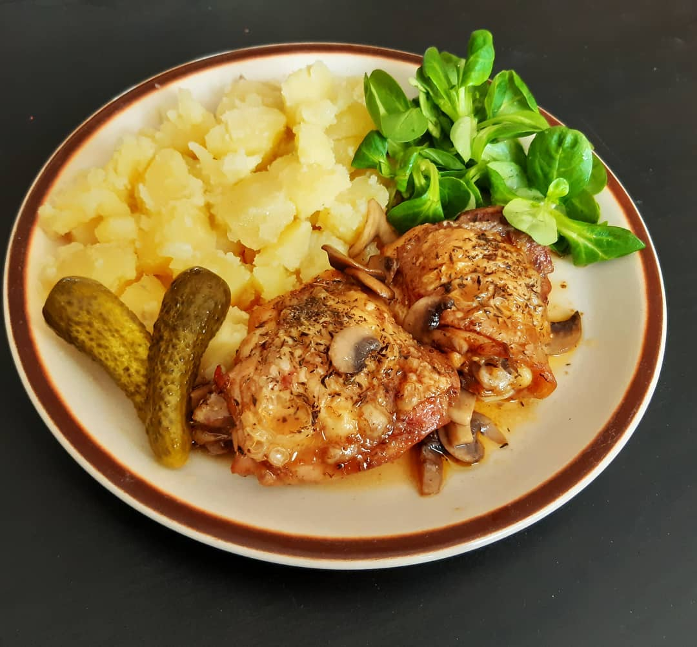

Hydina podľa @jajfil — Normy Jedál
Kurča na pive so šampiňónmi
------------------------------------------------------------------------------
Ingrediencie
1 kg kuracie stehná
200 ml svetlé pivo
30 g maslo
250 g čerstvé šampiňóny
soľ
1 pl grilovacie korenie
3 pl olivový olej
1 čl tymián
Postup
Šampiňóny umyjeme, nakrájame a na panvici vhodnej do rúry opražíme na masle. Trocha osolíme. Preložíme na bok na tanierik.
Kuracie stehná umyjeme a osušíme. Osolíme, posypeme grislovacím korením a na panvicu od hub pridáme olej a opražíme z každej strany 2 min. Podlejeme pivom a necháme odpariť alkohol. Posypeme tymiánom, dáme do rúry na 200°C pečieme nezakryté asi hodinu. 5 min. Pred koncom k mäsu pridáme aj opražené šampiňóny aj s ich výpekom. Necháme dopiecť.
Podávame so zeleninou, mastenými varenými zemiakmi, zemiakovým pyré, či ryžou.
#poultry#chicken#chickenthighs#potatoes#salad#beer#mushrooms#lunch#tast#meat#recipe#Bonappetite#food#meal#hydina#kuracina#kuraciestehna#zemiaky#salat#pivo#sampinony#obed#chutne#masite##recept#dobruchut#homecooking#varimdoma